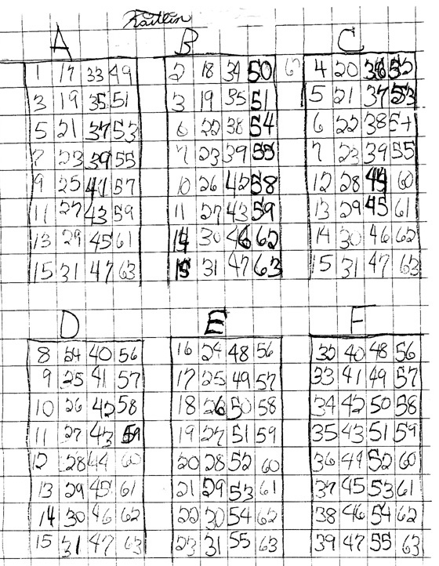

Kaitlin makes a new set of 6 "Magic Number Cards"
Kaitlin asked a very good question, "Could we have more cards that go from A to Z?" (Instead of the 5 binary cards A-E as shown in Sheri's work). Don suggested they go from A to F first. When there were five cards, people were asked to pick a number from 1 to 31. With six cards, what numbers do they pick from? Kaitlin looked at her binary number chart, 1 to 31, and decided that they would have to go from 1 to 63. Then she asked "what numbers are on each card"? Since the chart only went up to 31, she had to add a column to the left, in the 32's place. She looked at her chart again and decided to make the set of six cards below, by following the patterns in her chart. Don couldn't help Kaitlin too much, because he never had anyone do this before, including himself! Here are Kaitlin's 6 binary "Magic Number Cards"

Back to Patterns in Mathematics
Back to New Discoveries
To order
Don's materials
Mathman home